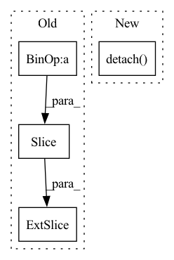

Pattern ID :42092
Before Change
_, latent = model.extract_latent(input)
print(latent.size())
real = latent [:,: n_bases// 2,:]
imag = latent[:,n_bases//2:,:]
power = real**2+imag**2
After Change
print(basis.size())
plt.figure()
plt.pcolormesh(basis.detach() .cpu().numpy(), cmap="bwr", norm=Normalize(vmin=-1, vmax=1))
plt.colorbar()
plt.savefig("data/tasnet/basis.png", bbox_inches="tight")
plt.close()In pattern: SUPERPATTERN
Frequency: 3
Non-data size: 4
Instances Fragment ID: 117850950
Project Name: tky823/dnn-based_source_separation
Commit Name: 3ca1f1e5986cebb7df022f46f176de179d4cdbb6
Time: 2021-09-23
Author: 40362510+tky823@users.noreply.github.com
File Name: src/models/tasnet.py
M Class Name: AnonimousClass
N Class Name: AnonimousClass
M Method Name: _test_tasnet_base(0)
N Method Name: _test_tasnet_base(0)
M Parent Class:
N Parent Class:
M File Name: src/models/tasnet.py
N File Name: src/models/tasnet.py
M Start Line: 507
M End Line: 540
N Start Line: 319
N End Line: 338
Before Change
masked_target = self.mask_target(target, self.patch_size)
// only reconstruct masked source patches
_, mask_length, _ = masked_target.shape
output = self.reconstruction_layer(source [:, -mask_length ::, :])
return output, masked_target
def mask(self, x):After Change
// encoder to decoder linear proj
enc_out = self.linear_projection(enc_out)
// shuffle the position embedding is equivalent to unshuffling tokens
expand_pos_embed = self.decoder_position_embedding.expand([B, -1, -1]).clone().detach()
pos_embed_no_mask = expand_pos_embed[~masks].reshape([B, -1, enc_out.shape[-1]])
pos_embed_mask = expand_pos_embed[masks].reshape([B, -1, enc_out.shape[-1]])
// dec in put, here use broadcasting for mask_token
dec_in = paddle.concat([enc_out + pos_embed_no_mask, self.mask_token + pos_embed_mask], axis=1) Fragment ID: 117850948
Project Name: br-idl/paddlevit
Commit Name: 03aa87698e6414ae335ca578f928be097a0bd0a4
Time: 2021-12-13
Author: xperzy@gmail.com
File Name: image_classification/MAE/transformer.py
M Class Name: MAEPretrainTransformer
N Class Name: MAEPretrainTransformer
M Method Name: forward(3)
N Method Name: forward(2)
M Parent Class: nn.Layer
N Parent Class: nn.Layer
M File Name: image_classification/MAE/transformer.py
N File Name: image_classification/MAE/transformer.py
M Start Line: 524
M End Line: 543
N Start Line: 523
N End Line: 551
Before Change
new_coords[s, :-padding or None, n_aa:] = coords[:, n_aa:]
// add detachyed scn and =O, but not cbeta
elif n_aa == 4:
new_coords [s, :-padding or None, 5:] = coords[:, 5:]
new_coords[s, :-padding or None, 3] = coords[:, 3]
new_coords = new_coords.to(device)After Change
* padding: int. padding token. same as in sidechainnet: 20
Outputs: whole coordinates of shape (batch, L, 14, 3)
atom_mask = atom_mask.bool().cpu().detach()
cum_atom_mask = atom_mask.cumsum(dim=-1).tolist()
device = backbones.device
batch, length = backbones.shape[0], backbones.shape[1] // cum_atom_mask[-1] Fragment ID: 117850945
Project Name: lucidrains/alphafold2
Commit Name: af52b14b8943a19879fb5d9c6829f0d64d4717f9
Time: 2021-05-25
Author: ericalcaide1@gmail.com
File Name: alphafold2_pytorch/utils.py
M Class Name: AnonimousClass
N Class Name: AnonimousClass
M Method Name: sidechain_container(5)
N Method Name: sidechain_container(5)
M Parent Class:
N Parent Class:
M File Name: alphafold2_pytorch/utils.py
N File Name: alphafold2_pytorch/utils.py
M Start Line: 663
M End Line: 703
N Start Line: 659
N End Line: 697